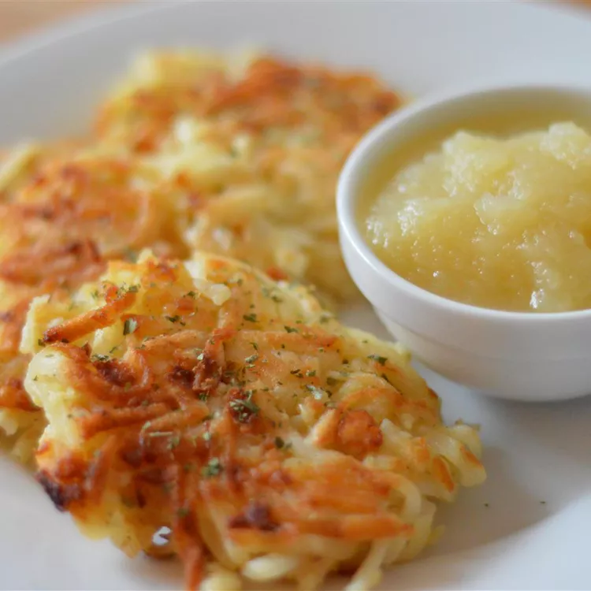

Mom's Potato Latkes

Allrecipes Community Tips and Praise
"Before you put the potato mixture in the pan, take the scoop and make sure to drain the liquid out by
holding the spoonful of potato against the side of the bowl," suggests recipe submitter and Allrecipes
Allstar Lindsay. "Also we usually crush the saltines in a Baggie, it saves on mess."
"I was missing Mom last night and craving this meal, and I was very happy with how the latkes turned out,"
says cecefltrn. "I layered the shredded potatoes with paper towels in a large bowl to absorb the excess
moisture, which worked well."
"Ended up having a lot of fries leftover the other night, so I pulverized them in my processor in place
of the shredded potato," according to videogame1012. "This turned out beautifully and flavorful."
Ingredients
- 3 cups shredded potato
- ¼ cup grated onion
- 2 large eggs, beaten
- 6 saltine crackers, or as needed, crushed
- ½ teaspoon salt, or more to taste
- ¼ teaspoon ground black pepper
- ½ cup vegetable oil, or as needed
Directions
- Mix potato, onion, eggs, crushed crackers, salt, and pepper together in a large bowl.
- Heat 1/4 inch oil in a heavy skillet over medium-high heat.
- Drop spoonfuls of the potato mixture, first pressing potato mixture against the side of the bowl to remove excess liquid, into the hot oil; slightly flatten the latkes into the oil with the back of your spoon so they are an even thickness.
- Cook in batches in the hot oil until browned and crisp, 3 to 5 minutes per side. Drain latkes on a paper towel-line plate.